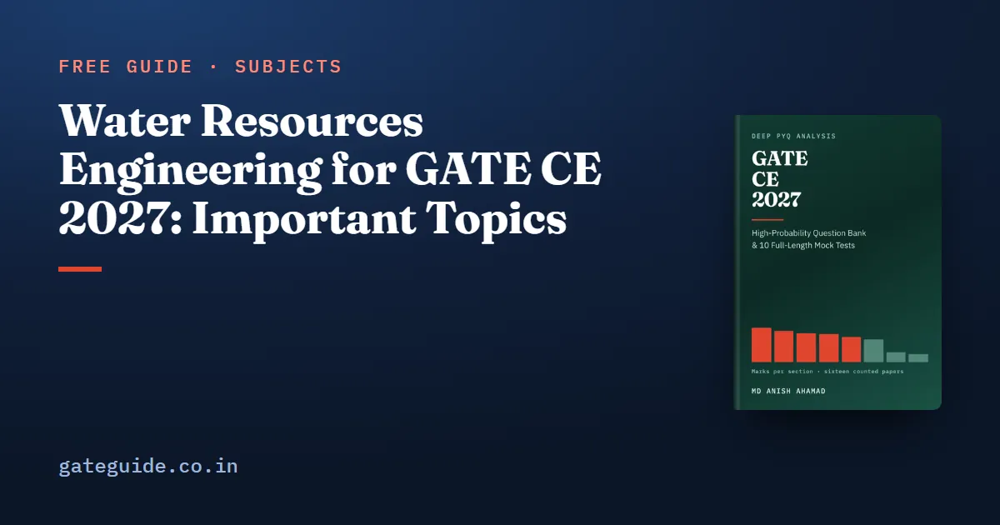

Water Resources Engineering for GATE CE 2027: Important Topics

Water Resources Engineering is the most stable section in the GATE Civil paper by one measure. Counted question by question across all sixteen papers from 2019 to 2026, Set 1 and Set 2 in each year, it averages 12.6 marks a paper and ranges only from 11 to 14, the tightest band of any technical section. But it is really four subjects under one heading, and the marks move between them from year to year while the total holds. This guide shows where they move, why no one subject deserves most of your time, and what the 2027 syllabus added.
In this guide
Key takeaways
- Mean 12.6 marks a paper, range 3. Plan on the section total; treat the internal split as an indication.
- Three subjects are close in weight: hydraulics 61 of the 202 counted marks, hydrology 58, fluid mechanics 52. None dominates.
- The lead changes hands. Hydrology was the largest subject in 2019, 2023, 2025 and 2026; fluid mechanics in 2020, 2021 and 2024; hydraulics outright only in 2022.
- Irrigation is the smallest subject, 31 marks, but like the other three it drew marks in all eight years.
- Nothing was deleted for 2027. Newly named: prismatic and mobile channels, steady and unsteady flows, rapidly varied flow, flow past sharp crested weirs, river training structures and streamflow measurements. Several had been examined before 2027 named them.
Four subjects under one heading
The 2027 syllabus gives this section four labelled parts: Fluid Mechanics, Hydraulics, Hydrology and Irrigation. In most engineering courses they fill two full semesters; here they share 12.6 marks of the paper's 100. Two quirks in the text are worth knowing. The hydraulic jump is named twice inside Hydraulics, once among the channel topics and again beside rapidly varied flow; it is one topic, not two. And the boundary between Fluid Mechanics and Hydraulics leaks: lift and drag sit in Fluid Mechanics while forces on immersed bodies sit in Hydraulics, though they are the same physics. The book counts each question where the syllabus wording puts it.
Where the 202 marks sit
The evidence is 129 questions and 202 marks, each checked against its official answer key.
| Subject | Marks | Questions | Share | Trend (late − early) | Last seen |
|---|---|---|---|---|---|
| Hydraulics | 61 | 37 | 30% | +3 | 2026 |
| Hydrology | 58 | 38 | 29% | +10 | 2026 |
| Fluid Mechanics | 52 | 33 | 26% | −2 | 2026 |
| Irrigation | 31 | 21 | 15% | −5 | 2026 |
Trend is marks in 2023–2026 minus marks in 2019–2022, each half being eight papers. A trend of one or two marks is noise.
How the marks move while the total holds
Here are the four subjects year by year, both sets combined:
| Subject | 2019 | 2020 | 2021 | 2022 | 2023 | 2024 | 2025 | 2026 |
|---|---|---|---|---|---|---|---|---|
| Hydraulics | 6 | 7 | 6 | 10 | 9 | 6 | 10 | 7 |
| Hydrology | 9 | 5 | 6 | 4 | 10 | 5 | 11 | 8 |
| Fluid Mechanics | 8 | 8 | 8 | 3 | 5 | 9 | 4 | 7 |
| Irrigation | 2 | 6 | 4 | 6 | 2 | 4 | 3 | 4 |
Read the columns, not the rows. In 2019 hydrology led with 9. In 2020 and 2021 fluid mechanics led with 8. In 2022 fluid mechanics fell to 3 and hydraulics rose to 10, the only year it led outright. In 2024 fluid mechanics led again with 9 while hydrology dropped to 5. In 2025 hydrology reached 11, the highest figure for any subject in any year. Through all of it, no single paper gave the section fewer than 11 marks or more than 14.
Two things follow. First, the section total is the number to plan on; which subject delivers it is not predictable. Second, no subject has earned the right to be the only one you prepare. The one difference between the two halves of the record worth noting is hydrology's: 24 marks in 2019–2022 against 34 in 2023–2026, and the lead in three of the last four years. The book states that as a description of the record, not a trend line, because the later half includes a dip to 5 in 2024 and one unusual paper moves a four-year block.
IIT Madras, which sets GATE 2027, also set both 2019 papers. They gave this section 13 and 12 marks, close to its mean, with hydrology on 9, fluid mechanics 8 and hydraulics 6. Two papers are a signal, not a law, and the syllabus has changed since; see what IIT Madras setting GATE 2027 means. Civil is examined as two different papers a year, which is why each citation below names the set; the two are put on one scale by normalisation across sessions.
Subject by subject
Hydraulics: 61 marks
Open-channel flow above all: specific energy and critical depth, the hydraulic jump and its energy loss, uniform flow by Manning's equation, and gradually varied flow profiles. Around it sit flow measurement, dimensional analysis and similitude, and forces on immersed bodies. Counted examples include 2019 Set 1, Q.13 and Q.22, and 2019 Set 2, Q.48.
The jump is the most reliable vehicle. Hold the sequent depths and the energy loss:
For a rectangular channel, , depending only on discharge per unit width; the most efficient rectangular section has . In Froude model studies discharge scales as . For surface profiles, remember that the surface approaches normal depth asymptotically and crosses critical depth vertically, which is why a jump is needed to cross it.
Hydrology: 58 marks
The subject that led in four of the eight years. Unit hydrograph questions are the most reliable recurrence, and steady well hydraulics in a confined aquifer is the standard two-mark numerical: , natural log, and only the ratio of radii matters. Flood risk over years is . Examples: 2019 Set 1, Q.15; 2019 Set 2, Q.14. Streamflow measurements are newly named inside the hydrology list, but not new to the paper; see below.
Fluid Mechanics: 52 marks
The recurring calculations are Bernoulli across a contraction, the momentum equation on a bend, Reynolds number, and Darcy–Weisbach head loss, , with the Darcy factor. Drag is on the projected frontal area. Potential flow is named but produced very little in the counted record; give it an hour. Examples: 2019 Set 1, Q.50; 2019 Set 2, Q.12; 2020 Set 1, Q.23.
Irrigation: 31 marks
The worst marks-per-page ratio in the paper: a long syllabus list producing about 1.9 marks a paper, though in every one of the eight years. Do not attempt all of it. Duty and delta () and Khosla's exit gradient are short, formulaic and recur; dam types and descriptive material are cheap to read once and expensive to master. Examples: 2019 Set 1, Q.14; 2020 Set 2, Q.23; 2021 Set 1, Q.58.
What 2027 added
Nothing was removed. Most additions sharpen Hydraulics; one sits in Hydrology and one in Irrigation. Newly named is not the same as never examined: several of these had already been set under the older wording.
- Prismatic and mobile channels, steady and unsteady flows. Two classifications that are independent of each other. Steady or unsteady is about change with time at a section; uniform or varied is about change with distance. A prismatic channel keeps its cross-section and bed slope along its length, like a lined canal; a natural river is non-prismatic, and gradually varied flow theory as usually taught assumes a prismatic channel. Mobile channels have been examined already: 2024 Set 1, Q.20 asked for the degrees of freedom of a channel with a mobile bed. Unsteady flow is the less familiar half: the classic channel problems are steady, while a flood wave passing down a river is unsteady.
- Rapidly varied flow. Names what the hydraulic jump is an instance of.
- Flow past sharp crested weirs. A specific structure with a specific formula, , and never set in any of the sixteen counted papers. The book's prediction, labelled as one, is that it is worth knowing cold: newly named topics are among the more likely places for a question in the first paper under a revised syllabus.
- River training structures. Descriptive and short: groynes or spurs, guide banks, marginal embankments, revetments and cut-offs. A groyne pointing downstream attracts the flow; one pointing upstream repels it and is the usual bank-protection form. Examined in part already: 2025 Set 1, Q.43 was an MSQ on Lacey's regime equations, though it named no training structure.
- Streamflow measurements. New to the Hydrology list, not to the paper: 2023 Set 2, Q.63 asked for the discharge of a river by the velocity–area method. At this level, that method is the one to hold.
How to prepare this section
- Cover hydraulics, hydrology and fluid mechanics evenly. They hold 171 of the 202 counted marks and take turns leading, so none can be the one you skip.
- Start with open-channel flow and the unit hydrograph, the most reliable recurrences in the two largest subjects.
- Learn the weir formula, the channel classifications and the velocity–area method from the 2027 text.
- Ration irrigation to its formulaic parts, but do not drop it: it drew marks in every year.
- Watch units and logs: m³/s against litres per second, hectares against square metres, natural log in well equations. The GATE virtual calculator guide covers the calculator you will use, and MSQ rules are in the marking scheme, common to every GATE paper.
The Water Resources chapter of the GATE CE 2027 book carries 32 questions in proportion to this evidence, including questions on the newly named topics that say so openly, each with a worked solution. Check the final syllabus on the official site before you plan.
Frequently asked questions
How many marks does Water Resources Engineering carry in GATE CE?
Counted question by question across all sixteen GATE Civil papers from 2019 to 2026, Water Resources Engineering averages 12.6 marks a paper and ranges only from 11 to 14. That three-mark band is the tightest of any technical section. The evidence is 129 questions and 202 marks, split between fluid mechanics, hydraulics, hydrology and irrigation.
Which part of Water Resources is most important for GATE CE 2027?
No single part leads by a distance. Hydraulics took 61 of the section's 202 counted marks, hydrology 58 and fluid mechanics 52, and the lead changes hands: hydrology was largest in 2019, 2023, 2025 and 2026, fluid mechanics in 2020, 2021 and 2024, and hydraulics outright only in 2022. Prepare those three evenly, and irrigation's formulaic parts after them.
Is fluid mechanics part of Water Resources Engineering in GATE CE?
Yes. The GATE CE syllabus places Fluid Mechanics, Hydraulics, Hydrology and Irrigation under one section heading, Water Resources Engineering. Fluid mechanics took 52 of the section's 202 counted marks across the sixteen papers, about a quarter, and drew marks in all eight years. Its recurring questions are Bernoulli, the momentum equation, Reynolds number and pipe head loss.
What is new in the GATE CE 2027 Water Resources syllabus?
Nothing was deleted. Newly named are prismatic and mobile channels, steady and unsteady flows, rapidly varied flow, flow past sharp crested weirs, river training structures and streamflow measurements. Several were examined before 2027 named them: streamflow measurement in 2023 Set 2, Q.63, a mobile-bed channel in 2024 Set 1, Q.20, and river training in part in 2025 Set 1, Q.43. Sharp-crested weirs never were. Confirm the final text on the official GATE 2027 website.
Should I skip irrigation engineering for GATE CE?
No, but ration it. Irrigation is the smallest subject, 31 of the 202 counted marks or about 1.9 a paper, yet it drew marks in all eight years and gave 6 in both 2020 and 2022. Its syllabus list is long, so hold the formulaic parts that recur, such as the duty and delta relation and Khosla's exit gradient, read the descriptive material once, and accept some exposure.
Sources
- GATE 2027 official website (IIT Madras)
- GATE 2027 CE syllabus (official PDF)
- GATE official paper archive (IIT Guwahati)
Dates, fees and the syllabus are set by the GATE 2027 organising institute and can change. Always confirm at gate2027.iitm.ac.in.